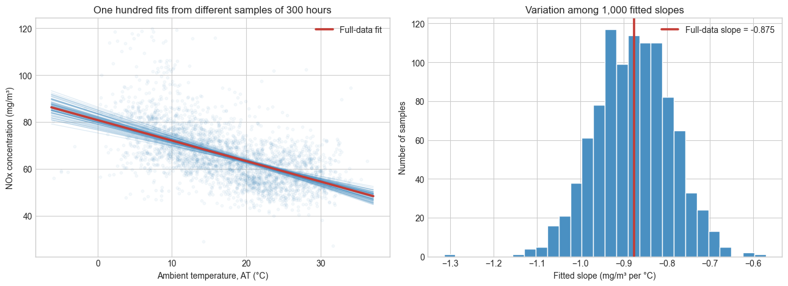

The first Regression notebook fitted a simple temperature–NOx model. Here, NOx is the measured nitrogen-oxides concentration in the turbine exhaust (mg/m³), and AT is ambient temperature (°C). This notebook asks why the fitted temperature slope is an estimate—and how to quantify its uncertainty.
Learning objectives
Distinguish the fixed, unknown population slope \(\beta_1\) from its fitted estimate \(\hat{\beta}_1\).
See how fitted slopes vary across different subsets of observations.
Explain why regression needs a principled measure of slope uncertainty.
1. From a population model to one fitted slope
To describe the population relationship, write the simple model for the \(i\)th operating hour:
The population parameters \(\beta_0\) and \(\beta_1\) are fixed but unknown. The error \(\epsilon_i\) represents the part of NOx for that hour not explained by AT alone: other operating conditions, unmeasured factors, and measurement variation.
We do not observe \(\beta_0\) or \(\beta_1\) directly. Instead, we apply least squares to our one observed collection of operating hours. A hat marks a quantity estimated from that data, giving the fitted prediction
The fitted slope above is one estimate, \(\hat{\beta}_1\), from one observed dataset. It is not the unknown population slope \(\beta_1\). If a comparable observation process were repeated, its operating hours and error terms would differ, and the fitted slope would differ too.
To make this sampling variability visible, we fit the line to many random collections of operating hours.
Below, we draw 1,000 random subsets containing 300 rows each, without replacement, and fit a line to each. The left panel overlays 100 of those fits so their spread remains easy to see; the right panel uses all 1,000.
fig, axes = plt.subplots(1, 2, figsize=(13, 4.8))axes[0].scatter(plot_data["AT"], plot_data["NOX"], alpha=0.05, s=10, color="#4a90c2")for _, fit in sample_fits.iloc[:n_lines_to_show].iterrows(): axes[0].plot(temperature_grid, fit["intercept"] + fit["slope"] * temperature_grid, color="#4a90c2", alpha=0.18, linewidth=0.9)axes[0].plot(temperature_grid, full_intercept + full_slope * temperature_grid, color="#c43c35", linewidth=2.6, label="Full-data fit")axes[0].set( xlabel="Ambient temperature, AT (°C)", ylabel="NOx concentration (mg/m³)", title="One hundred fits from different samples of 300 hours",)axes[0].legend()axes[1].hist(sample_fits["slope"], bins=28, color="#4a90c2", edgecolor="white")axes[1].axvline(full_slope, color="#c43c35", linewidth=2.6, label=f"Full-data slope = {full_slope:.3f}")axes[1].set( xlabel="Fitted slope (mg/m³ per °C)", ylabel="Number of samples", title="Variation among 1,000 fitted slopes",)axes[1].legend()fig.tight_layout()plt.show()

The fitted lines are similar, but not identical. Their slopes differ because each subset contains a different mix of operating hours and their associated variation. This is why \(\hat{\beta}_1\) is an estimate rather than the unknown population value \(\beta_1\).
The exercise is only a visual demonstration. To quantify uncertainty for the full-data slope, we need a principled estimate of how much \(\hat{\beta}_1\) would vary across comparable full-size datasets: its standard error.
3. A model-based standard error for the slope
The repeated 300-hour fits give a visual demonstration, but they do not directly quantify the uncertainty of the slope fitted to the full dataset. For that, return to the population model from Section 1. Conditional on the observed temperature values \(x_i\), assume the errors \(\epsilon_i\) are independent, have mean zero, and have a common variance \(\sigma^2\). Start with the ordinary-least-squares slope formula:
Removing \(\bar{y}\) therefore gives exactly the same slope estimate. Now substitute the population model \(y_i = \beta_0 + \beta_1 x_i +
\epsilon_i\) into that formula:
The fitted slope is therefore the unknown population slope plus a weighted sum of random errors. Here \(X\) denotes the observed predictor values, which we hold fixed. The population slope \(\beta_1\) is fixed too; the uncertainty in \(\hat{\beta}_1\) comes from the errors.
To find its variance, use two rules: multiplying a random variable by a constant multiplies its variance by the square of that constant, and the variances of independent random variables add. Thus, for fixed weights \(a_i\),
The squared deviations do appear in the numerator: their sum is \(S_{xx}\), which cancels one of the two factors of \(S_{xx}\) in the denominator.
The denominator captures how much information the temperatures provide: more observations and a wider spread of AT values both make \(S_{xx}\) larger and the fitted slope more precise.
We do not know the population error variance \(\sigma^2\). We estimate it from the residuals of the fitted line:
We divide by \(n-2\) because the intercept and slope were estimated from the same data. Replacing \(\sigma\) with the residual estimate \(s\) gives the estimated standard error of the slope:
n =len(regression_data)sxx = ((regression_data["AT"] - regression_data["AT"].mean()) **2).sum()rss = (full_model.resid **2).sum()residual_sd = np.sqrt(rss / (n -2))slope_se = residual_sd / np.sqrt(sxx)pd.Series( {"Number of operating hours": n,"Residual standard deviation, s (mg/m³)": residual_sd,"Temperature spread, Sxx (°C²)": sxx,"Standard error of the slope": slope_se, }).round(4)
Number of operating hours 3.673300e+04
Residual standard deviation, s (mg/m³) 9.689900e+00
Temperature spread, Sxx (°C²) 2.037323e+06
Standard error of the slope 6.800000e-03
dtype: float64
4. A 95% confidence interval for the slope
With a standard error, we can put an interval around the fitted slope. With this large dataset, we calculate a 95% confidence interval as
where \(z^* = 1.96\) is the 97.5th percentile of the \(z\) distribution, the standard Normal distribution \(Z \sim N(0, 1)\). This is the familiar bell curve with mean zero and standard deviation one.
For theoretical rigor, finite-sample regression inference uses a \(t\) distribution instead. With \(n-2 = 36{,}731\) degrees of freedom here, the difference is negligible, so we will use the simpler \(z\) calculation throughout. With a large dataset, it is a useful approximation when the errors are independent and reasonably well behaved.
from scipy.stats import normdf = n -2z_star = norm.ppf(0.975)ci_lower = full_slope - z_star * slope_seci_upper = full_slope + z_star * slope_sepd.Series( {"Fitted slope, β̂₁ (mg/m³ per °C)": full_slope,"Standard error": slope_se,"z critical value": z_star,"95% CI lower bound": ci_lower,"95% CI upper bound": ci_upper, }).round(4)
Fitted slope, β̂₁ (mg/m³ per °C) -0.8753
Standard error 0.0068
z critical value 1.9600
95% CI lower bound -0.8886
95% CI upper bound -0.8620
dtype: float64
For this dataset, the interval gives a plausible range for the unknown population slope under the model assumptions. Its frequentist interpretation is about the procedure: if we repeatedly collected comparable datasets and constructed intervals this way, about 95% of those intervals would contain the fixed value \(\beta_1\).
We have not yet tested a particular claim about \(\beta_1\). That is the next step.
5. Is the temperature slope statistically significant?
The full-data fit gave \(\hat{\beta}_1 = -0.8753\) mg/m³ per °C. The confidence interval says that this estimate is precise under the model. We can now ask a specific population question: is there evidence that the unknown slope \(\beta_1\) differs from zero?
For a two-sided test, state the competing hypotheses as
Here \(H_0\) says there is no linear association between AT and expected NOx in this simple model. It does not say that temperature has no causal effect on NOx.
Standardize the fitted slope
The standard error tells us the scale of ordinary fitted-slope variation. Under the null hypothesis, zero is the reference slope, so the test statistic is
It measures how many standard errors the fitted slope is from zero. We use the standard Normal (\(z\)) distribution as the reference distribution for this large dataset.
Observed z statistic -128.929375
Two-sided p-value < 0.001
Decision at α = 0.05 Reject H₀
dtype: object
For a two-sided test, the p-value is
\[
p = P\left(\lvert Z \rvert \geq \lvert z_{\mathrm{obs}} \rvert
\;\middle|\; H_0\right).
\]
It is the probability of a fitted slope at least this far from zero, if the population slope really were zero. It is not the probability that \(H_0\) is true. We report \(p < 0.001\), rather than a numerical zero.
Decision at \(\alpha = 0.05\). Since \(p < 0.001 < 0.05\), we reject \(H_0\). The fitted negative AT slope is statistically significant at the 5% level in this simple regression model.
This agrees with the 95% confidence interval: zero is outside \([-0.8886, -0.8620]\). For matching two-sided \(z\) tests and confidence intervals, these are two ways of reaching the same decision.
6. What statistical significance does—and does not—say
Statistical significance says the observed negative slope would be hard to reconcile with \(\beta_1 = 0\) under this model. It does not establish causality, validate this one-predictor model, or decide whether a change of about \(0.875\) mg/m³ per \(1^\circ\)C is engineering-important. Those require domain knowledge, model checking, and—in a causal question—a defensible study design.
Check-in
In this model, what does \(H_0: \beta_1 = 0\) claim?
What does the slope \(z\) statistic measure?
Name one thing that \(p < 0.001\) does not establish.